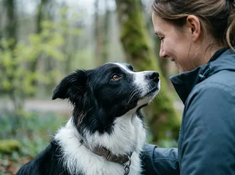
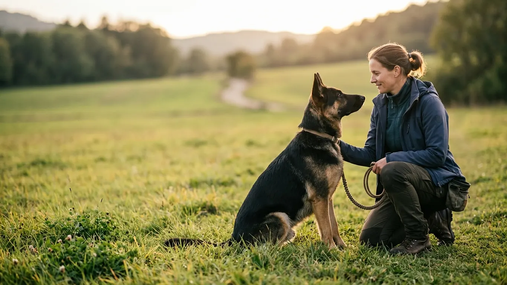
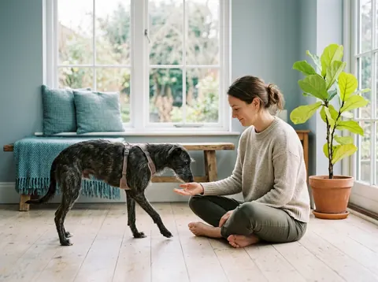
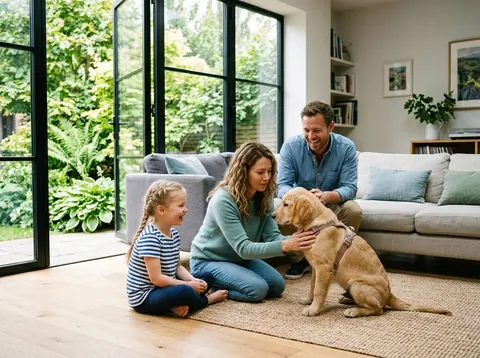
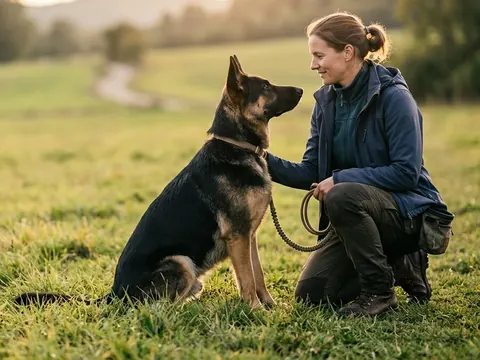
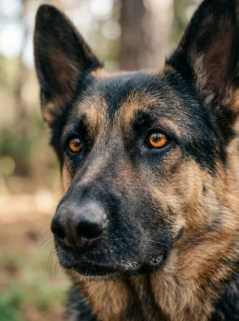
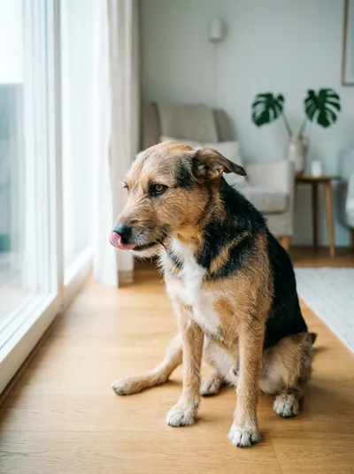

Psicología canina
Comprensión del comportamiento, necesidades emocionales y comunicación canina.

Psicología y adiestramiento canino
Psicología, comunicación y adiestramiento canino para construir una relación equilibrada entre tú y tu mejor amigo.

Filosofía Loboalpha
Cada conducta tiene un origen. Detrás de un ladrido, un tirón de correa o un miedo repentino hay una emoción, una necesidad o un mensaje que tu perro está intentando expresar.
En Loboalpha no buscamos únicamente que tu perro obedezca. Buscamos que tú lo entiendas y que él te entienda a ti. Cuando comprendemos su conducta, sus necesidades y su lenguaje, el entrenamiento deja de ser una imposición y se convierte en una conversación.
Leemos lo que hace tu perro y, sobre todo, por qué lo hace.
Físicas, emocionales y sociales: la base de su equilibrio.
Un lenguaje compartido para una relación clara y equilibrada.
Nuestros servicios
Desde la comprensión de su mente hasta el entrenamiento de su respuesta: acompañamos a cada perro y a su familia según sus necesidades reales.

Comprensión del comportamiento, necesidades emocionales y comunicación canina.

Estudio y comprensión del comportamiento natural y social de los perros.

Identificación y atención de conductas problemáticas, como reactividad, miedos, ansiedad y agresividad.

Programas de intervención conductual adaptados a las necesidades de cada perro.

Desarrollo de hábitos, comunicación y convivencia saludable entre perros y familias.

Entrenamiento de comandos, autocontrol, atención y respuesta a instrucciones.
El lenguaje de tu perro
Los perros no hablan con palabras: hablan con todo su cuerpo. Su postura, su mirada, sus movimientos y pequeñas señales revelan cómo se sienten en cada momento. Aprender a leerlas es el primer paso para responder de forma justa y oportuna.




Importante: ninguna señal se interpreta de forma aislada. El contexto, la historia y el conjunto del cuerpo de cada perro son los que dan significado a su comunicación.
Metodología Loboalpha
No existen fórmulas universales. Cada intervención nace de comprender a tu perro, a tu familia y el entorno en el que conviven.
Conocemos a tu perro en su contexto: rutinas, entorno, historia y la relación con su familia.
Analizamos qué hace tu perro, cuándo lo hace y qué función cumple esa conducta para él.
Detectamos las necesidades físicas, emocionales y sociales que están influyendo en su conducta.
Diseñamos un plan a la medida de tu perro, de tus objetivos y de tu estilo de vida.
Te enseñamos a comunicarte con tu perro para que el cambio continúe en casa, todos los días.
Revisamos avances, ajustamos la estrategia y consolidamos los resultados a lo largo del proceso.

Conexión humano-canina
Cuando tu perro se siente comprendido, la casa cambia: los paseos se disfrutan, las visitas dejan de ser un problema y la convivencia se vuelve tranquila.
Tener un perro es una responsabilidad y también un vínculo profundo. Te acompañamos con empatía y sin juicios para que ese vínculo se construya desde la confianza, el respeto y una comunicación clara.
Da el primer paso
Cuéntanos sobre tu perro. Te orientamos para entender su comportamiento y definir el mejor camino para ambos.
Atención directa por WhatsApp